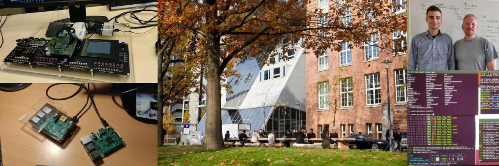
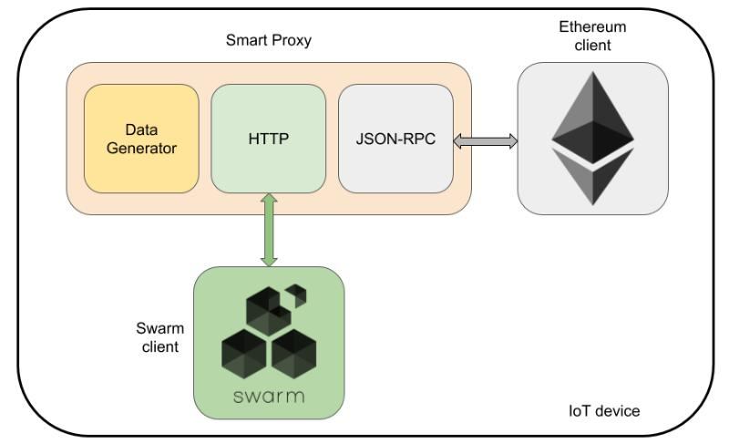

University
I graduated from the University of Applied Science Hamburg with a bachelor degree in computer science in 2019. I consider myself lucky to join Prof. Becke’s group of students who specialized in distributed systems. Under Professor Becke guidance, I wrote my graduate thesis on “Analysis of a blockchain-based IoT infrastructure with Ethereum and Swarm”.
Herzlichen Glückwunsch an Artur I. für seine erfolgreiche Verteidigung. Seine BA Arbeit im Kontext von #Blockchains hat uns in unserer Arbeit weitergebracht. Wir haben alle viel über die Kosten einer solchen gelernt. @inf_haw_hh @CADS_HAW
— CaDS - HAW Hamburg (@CADS_HAW) August 23, 2019
During the study, the IoT devices were configured as blockchain nodes and integrated into a common private Ethereum network. In the respective architectures, a Swarm Peer-to-Peer network was used as the data storage and Smart Contract was provided to enable interaction with the blockchain. The system was exposed to a linearly increasing data load within 36 hours.

The final thesis can be found here.
Certificates & Courses
-
React Native - The Practical Guide
Udemy, 2022
ID: UC-3d1f5088-e87b-4102-8e59-b39df95a5a84 -
ISTQB Certified Tester Foundation Level
iSQI Group, 2017
ID: 17-CTFL-118242-01